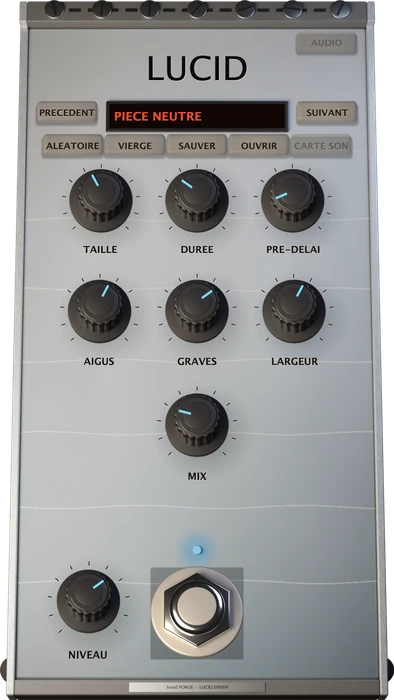
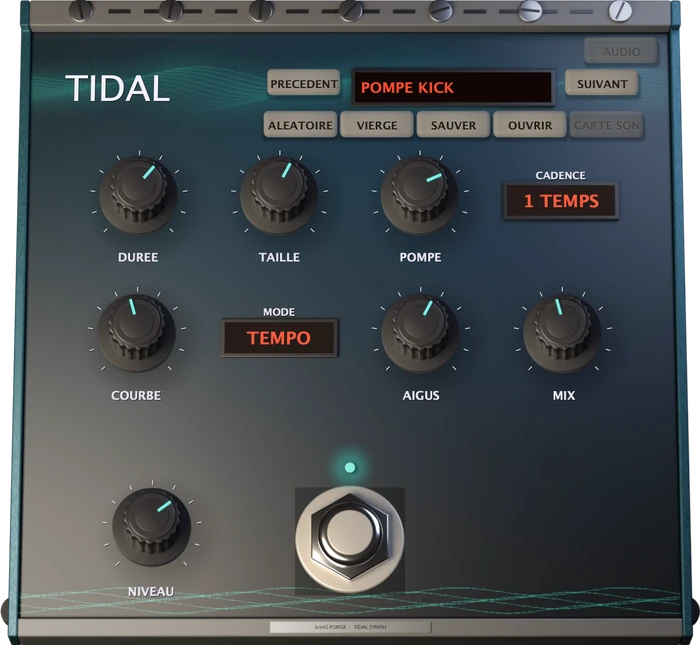

Le catalogue
Les 9 plug-ins : réverbes
 ABYSSRéverbe de studio · réseau de seize lignesRéverbes
ABYSSRéverbe de studio · réseau de seize lignesRéverbes AURORARéverbe de scintillement · octave et quinteRéverbes
AURORARéverbe de scintillement · octave et quinteRéverbes COILRéverbe à ressort et delay de bandeRéverbes
COILRéverbe à ressort et delay de bandeRéverbes
LUCIDRéverbe transparenteRéverbes NAVERéverbe chaude · grande nefRéverbes
NAVERéverbe chaude · grande nefRéverbes SHEETRéverbe à plaqueRéverbes
SHEETRéverbe à plaqueRéverbes SLAMROOMRéverbe à porte, inverse et rampeRéverbes
SLAMROOMRéverbe à porte, inverse et rampeRéverbes
TIDALRéverbe synchronisée au tempoRéverbes ZENITHRéverbe à douze machinesRéverbes
ZENITHRéverbe à douze machinesRéverbes